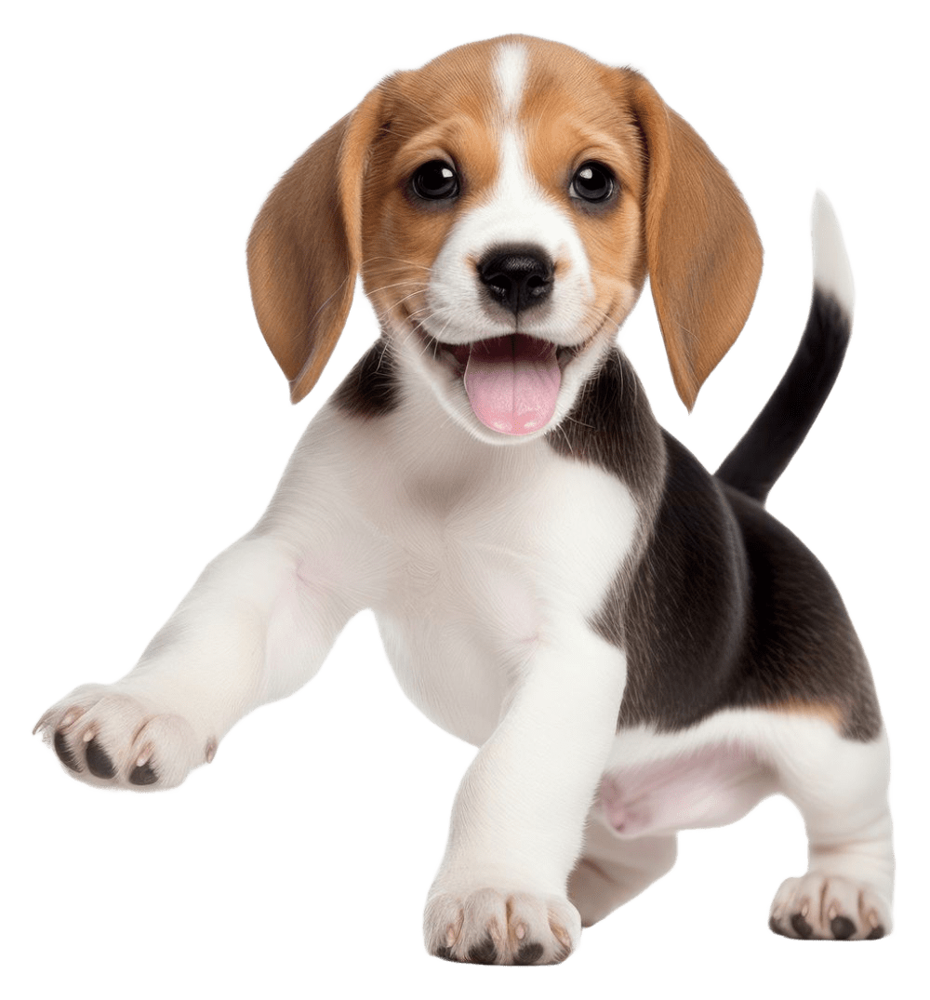

Beagle é uma raça de cães de caça de pequeno a médio porte originária do Reino Unido.
O Beagle é um membro do grupo hound, é similar na aparência ao foxhound porém menor, com pernas mais curtas e orelhas mais longas e macias.
Beagles são sabujos, desenvolvidos principalmente para o rastreamento de coelhos, lebres e outros animais na caça. Eles têm um olfato apurado e o seu instinto de rastreamento faz com que essa raça seja usada como cães farejadores em atividades como importações proibidas de produtos agrícolas e de gêneros alimentícios em quarentena em todo o mundo.
Beagles são inteligentes e são populares como animais de estimação por causa de seu tamanho, temperamento e ausência de problemas de saúde genéticos.